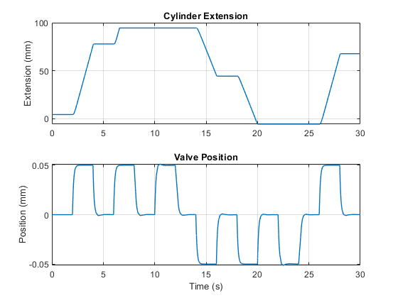

Hydraulic Actuator with 1D Mechanical Ports
This example shows how to extend Simscape Multibody models with additional physical effects using only the Foundation library blocks in Simscape. A hydraulic actuator raises and lowers a lift table by extending and contracting. The table is a four-bar mechanism which moves vertically and horizontally.
This method of extending Simscape Multibody models does not communicate the position information from the Simscape Multibody joints to the Simscape mechanical blocks. Some Simscape blocks, such as the hardstop, require that information. When using this method, you can use MATLAB variables to set consistent initial positions in the joint and hardstop block.
Another way to set the value is to update diagram (Ctrl+D), read the initial position from the Model Report in the Mechanics Explorer (Tools --> Model Report), and then use that value into the hard stop block parameter. In this example, we set the hard stop initial position using value from the Model Explorer. To test this method, click on the hyperlink to change the initial height of the table, update diagram, get the initial position of the Prismatic Cylinder Piston, and enter that into the mask of the Hydraulic Actuator.
Contents
Model

Hydraulic Actuator Subsystem
This hydraulic actuator is constructed using Simscape Foundation library blocks. More advanced components are available in Simscape Fluids. In this network, the hardstop block needs to know the initial position of the Simscape Multibody joint to which it is connected. That value is set in the mask for this subsystem.
Four Bar Subsystem
This models the lift table as a four-bar mechanism. The initial height of the table is set using the position state target for the Y-prismatic degree of freedom in the 6-DOF Joint labeled Initial Table Height. That value is set in the mask for this subsystem.
The 6-DOF Joint has no effect on the dynamics or kinematics during simulation. It is only used to set the initial position of the mechanism along an axis where we have not defined a joint.

Simulation Results from Simscape Logging
The table is lifted and lowered in stages. The upper and lower limits on the cylinder extension indicates that the cylinder has reached the ends of its range of travel.
Mechanics Explorer Animation